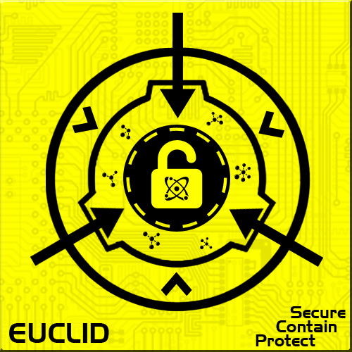

» Класс SCP-объектов «Евклид»
Класс SCP-объектов «Евклид»
Классы объектов
Классификация «Евклид» присваивается SCP-объектам, свойства которых не до конца поняты или же поведение которых невозможно предсказать. «Евклиды» не представляют такой же опасности для человечества, как объекты класса «Кетер», однако их содержание может быть связано с довольно большими трудностями.
Объекты класса «Евклид» могут быть использованы во благо Фонда SCP или человечества, однако в связи с их необычной природой подобное применение может иметь непредвиденные последствия. «Евклид» может быть реклассифицирован как «Безопасный», если удаётся понять механизм его работы или разработать меры содержания, полностью исключающие возможность проявления объектом его свойств. С другой стороны, существует вероятность и повышения класса объекта до «Кетера».
Объект класса «Евклид» можно сравнить с диким животным, которое может как напасть, так и пройти мимо.
Примеры объектов:
- данный объект не представляет непосредственной опасности (разумеется, если не заходить внутрь), однако по причине его свойств изучен он не очень хорошо, вследствие чего непонятно, что от него ждать. Именно поэтому объекту присвоен класс «Евклид».
Маркировка класса «Евклид»
Правило коробки: Если положить объект в коробку, убрать её подальше, и нельзя заранее сказать, что случится, то это, вероятно, «Евклид».